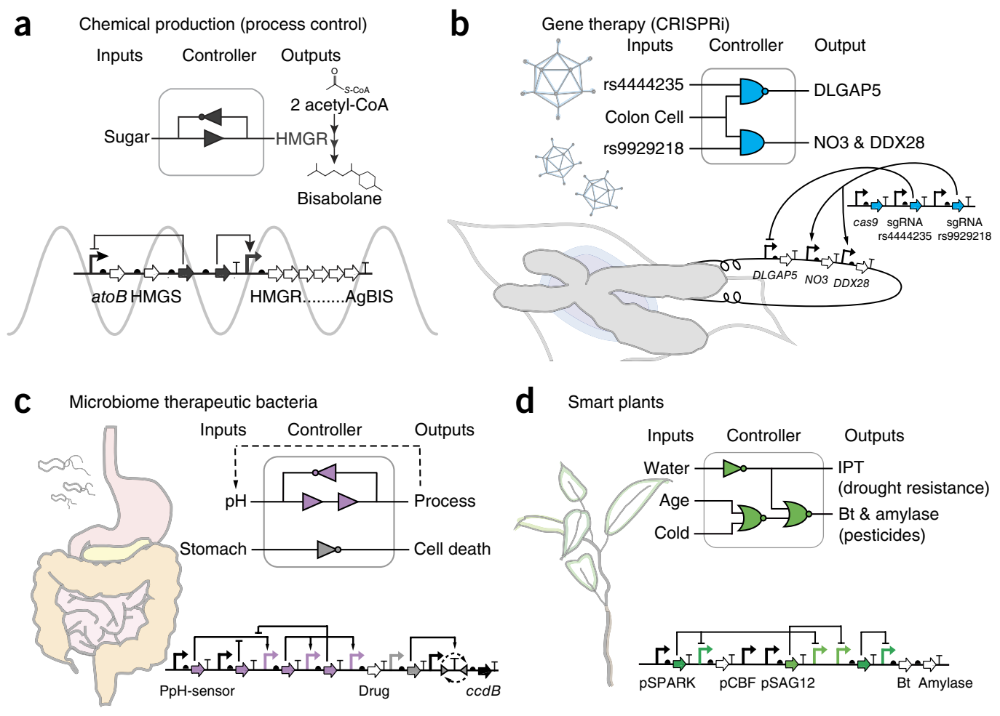
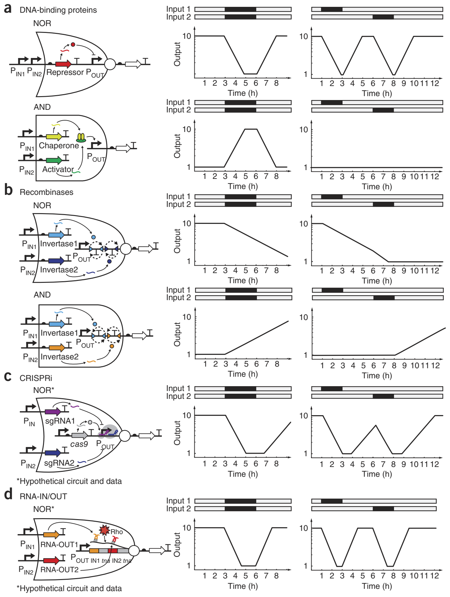
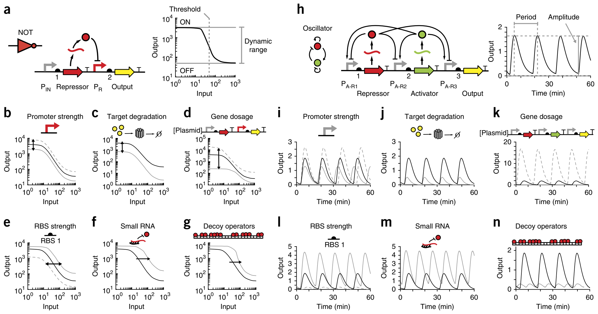
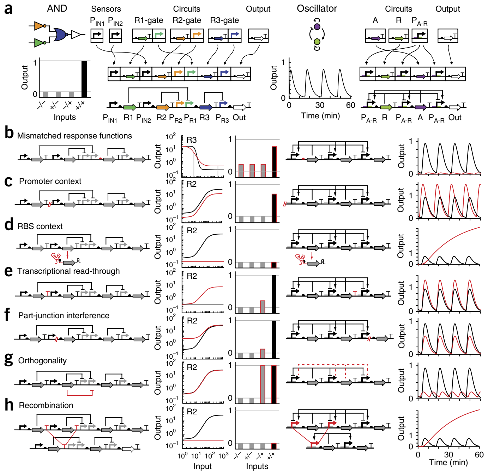
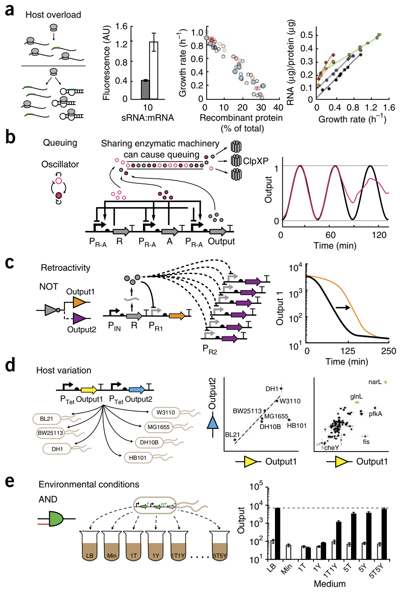
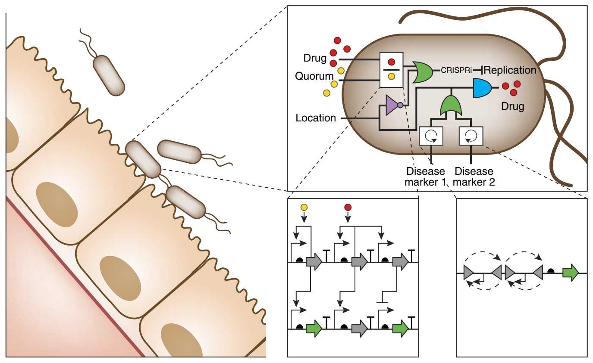

Principles of genetic circuit design
Synthetic Biology Center, Department of Biological Engineering, Massachusetts Institute of Technology, Cambridge, Massachusetts, USA. Correspondence should be addressed to C.A.V. (cavoigt@gmail.com).
Cells navigate environments, communicate and build complex patterns by initiating gene expression in response to specific signals. Engineers seek to harness this capability to program cells to perform tasks or create chemicals and materials that match the complexity seen in nature. This Review describes new tools that aid the construction of genetic circuits. Circuit dynamics can be influenced by the choice of regulators and changed with expression ‘tuning knobs’. We collate the failure modes encountered when assembling circuits, quantify their impact on performance and review mitigation efforts. Finally, we discuss the constraints that arise from circuits having to operate within a living cell. Collectively, better tools, well-characterized parts and a comprehensive understanding of how to compose circuits are leading to a breakthrough in the ability to program living cells for advanced applications, from living therapeutics to the atomic manufacturing of functional materials.

Performing computation in a living cell will revolutionize biotechnology by improving existing processes and enabling new applications. In the short term, the production of bio-based chemicals can be improved by timing gene expression at different stages of fermentation or by turning on an enzyme only under particular conditions (e.g., high cell density)1–6. As circuits become more advanced, entire algorithms from control theory could be implemented to improve biochemical production7–16 (Fig. 1a). Synthetic regulation is also an important tool for the discovery of natural products including pharmaceuticals, insecticides and entirely new classes of chemicals. Accessing these products may require synthetic regulation because many of the relevant gene clusters are ‘silent’, meaning that the conditions under which they are induced are unknown17–22. Outside of the fermenter, living cells could be programmed to serve as therapeutic agents that correct genetic disease (Fig. 1b) or colonize niches in the human microbiome to perform a therapeutic function23–35 (Fig. 1c). Longer-term applications include ‘smart’ plants that sense and adapt to environmental challenges (Fig. 1d) and bacteria that organize to weave functional materials with nanoscale features36–42.
Despite its potential, genetic circuit design remains one of the most challenging aspects of genetic engineering43. The earlier fields of protein and metabolic engineering have yielded tools to optimize enzymes and fluxes through a metabolic network. These tools include computational methods that can predict the impact of an amino acid substitution on protein thermostability44 or the distribution of flux through modified metabolic networks45. Biotech companies often have research groups dedicated to protein and metabolic engineering that have specialized training in these tools. However, industrial groups dedicated to building synthetic regulation are rare, and even simple tasks, such as building a switch or inducible system, tend to be one-off projects performed by a nonspecialist.
Several features of genetic circuits make them challenging to work with, relative to other areas of genetic engineering. First, circuits require the precise balancing of their component regulators to generate the proper response46,47. Computational tools and part libraries that enable the tuning of expression levels have been developed only recently48–51. Before this, only course-grained control was achievable with small sets of parts46,47,52. Second, many circuits are difficult to screen in directed-evolution experiments for correct performance. Digital logic has clear ON and OFF states that can form the basis for a screen12,53–59. However, screening for dynamic circuits, such as oscillators, is significantly more complex60, and it is hard to imagine how screens would be established for more sophisticated functions, such as a PID (proportional integral derivative) controller with proscribed response properties. Third, there are few tools to measure circuit performance. Typically, a fluorescent reporter is used to measure the output, but fluorescence detection requires artificially high expression, and fluorescent protein degradation rates can limit the ability to measure dynamics. Fourth, synthetic circuits are very sensitive to environment, growth conditions and genetic context in ways that are poorly understood61. Finally, the process of building a large genetic circuit requires the assembly of many DNA parts, and this process has been both technically challenging (until recently) and fraught with its own sources of errors58,62–67.
The purpose of this Review is to serve as a guide to designing a prokaryotic transcriptional circuit, in which both the inputs and outputs are promoters53,55,68–71. Transcriptional circuits maintain a common signal carrier, which simplifies the connection of circuits to build more sophisticated operations72. Post-transcriptional circuits, including those based on protein and RNA interactions, are covered in other excellent reviews73–75. Although the majority of this guide is dedicated to bacterial circuits, many of the principles, albeit not the details, are relevant for eukaryotes, including human cells and plants76,77.
Genetic circuit design based on different regulator classes

Transcriptional circuits function by changing the flow of RNA polymerase (RNAP) on DNA. There are a number of regulators that influence this flux that have been used as the basis for building synthetic circuits (Fig. 2). For example, DNA-binding proteins can recruit or block RNAP to increase or decrease the flux, respectively. Analogously, the CRISPRi system uses the Cas9 protein to bind to the DNA and alter transcription78,79. RNAP flux can also be altered with invertases that change the orientation of promoters, terminators or gene sequences. Additionally, RNA translational repressors, such as RNA-IN/OUT, can be converted to control RNAP flux80,81. In this section, we describe recent advances in these methods and analyze the impact that each regulator has on circuit response.
DNA-binding proteins. Many families of proteins can bind to specific DNA sequences (operators). The simplest way to use these proteins as regulators is to design promoters with operators that block the binding or progression of RNAP. Such repressors have been built out of zinc-finger proteins82, transcription activator–like effectors83,84, TetR homologs71, phage repressors85,86 and LacI homologs87. A core set of three repressors were used to build many of the first synthetic circuits (CI, TetR, LacI)47,53,88–91. However, recently there have been efforts to expand the number of DNA-binding proteins that are available for circuit design54,92–99. Expanding protein libraries can be challenging because each repressor has to be orthogonal; i.e., only interact with their operators and not the others in the set. Because of their simple function, repressors are relatively easy to move between species, including to eukaryotes92–97. DNA-binding proteins can also function as activators that increase the flux of RNAP on DNA. Recent efforts have increased the number of such proteins that are available for constructing circuits54,98–100.
Many logic gates have been constructed with DNA-binding proteins71,101–109. For example, NOT and NOR gates have been built by connecting input promoter(s) to a repressor that turns off an output promoter47,53,71,88,110 (Fig. 2a). Other types of transcriptional logic gates have been built using pairs of proteins in which one either activates or inhibits the other. For example, AND gates have been built with artificially split proteins111 and activators that require chaperones55,101 (Fig. 2a). Similarly, NAND gates can be built with proteins that block the activity of an activator, such as anti-σ factors, which inhibit σ factors100.
DNA-binding proteins have also been used to build circuits that incorporate positive and negative feedback loops, which form the basis for dynamic circuits, such as pulse generators112, bistable switches47,53,113 and oscillators70,88,114–116. Analog circuits, which allow complex computational functions to be generated with fewer regulators, have also been built with DNA-binding proteins. For example, two or three transcription factors can be used to build an adder or a ratiometer103.
There are also several challenges in using DNA-binding proteins to build circuits. Individual transcription factors may appear nontoxic, but often a combination of multiple regulators can lead to acute toxicity. The circuits can also be very dependent on growth rate because differences in the dilution rate change how quickly regulators accumulate or degrade, which alters their steady-state concentration, ultimately affecting their response. Finally, the response functions are often suboptimal and difficult to control because they have high OFF states (meaning they generate significant transcriptional signals in the OFF state) and low dynamic ranges.
Recombinases. Recombinases are proteins that can facilitate the inversion of DNA segments between binding sites117. Site specific recombinases often mediate ‘cut-and-paste’ recombination, during which DNA is looped, cleaved and religated118. Two types of recombinases have been used to build genetic circuits. The first is tyrosine recombinases, such as Cre, Flp and FimBE, which require host-specific factors69,119–121. These recombinases can be reversible and flip the DNA in both directions, or irreversible and flip in only a single direction. The second class of recombinases is serine integrases, which catalyze unidirectional reactions that rely on double-strand breaks to invert DNA. Serine integrases typically do not require host factors and often have cognate excisionases that can be expressed independently to return the DNA to its original orientation.
Recombinases have been used to build switches119, memory circuits120,121, counters69 and logic gates122,123. These proteins are ideal for memory storage because they flip DNA permanently, and once the DNA is flipped, its new orientation is maintained without the continuous input of materials or energy. In recombinase logic gates, these discrete physical states of the DNA can correspond to ON and OFF states (1 and 0). However, using recombinases can be challenging because their reactions are slow (requiring 2–6 h) and often generate mixed populations when targeting a multicopy plasmid121. Reversible recombinases can also generate mixed populations; however, this limitation was overcome recently when a unidirectional serine integrase was used to flip DNA in one direction and an integrase-excisionase pair was used to return it to the original state124.
All two-input gates, including AND and NOR logic, have been constructed using orthogonal serine integrases122,123 (Fig. 2b). The gates are organized such that two input promoters express a pair of orthogonal recombinases, which change RNAP flux by inverting unidirectional terminators, promoters or entire genes. These gates are based on unidirectional serine integrases without excisionases and therefore operate as memory circuits that record exposure to two input signals. Once flipped, the circuits cannot be returned to their original state; therefore, the gates do not distinguish the order in which they were exposed to the inputs or even whether the inputs occurred at the same time. To overcome this limitation, rewritable switches could be used to build logic gates that respond transiently to pulses of inputs. To do this, one recombinase is constitutively expressed to maintain the state, and the other is induced in response to an input signal.
CRISPRi. Clustered, regularly interspaced, short palindromic repeat (CRISPR) arrays function as a bacterial ‘immune system’ that targets specific DNA sequence motifs for degradation125. CRISPR systems use a Cas (CRISPR-associated) nuclease and guide RNA to introduce double-strand breaks to specific DNA sequences126. Mutant Cas proteins (such as dCas9 (ref. 79) and Cas9N− (ref. 127)) that do not have nuclease activity have been developed and used as transcription factors that knock down gene expression by forming a DNA bubble that interferes with RNAP activity78,79. CRISPR can also activate transcription by fusing an RNAP recruiting domain to catalytically inactive Cas9 (refs. 78,127–131). One advantage of CRISPR interference (CRISPRi) is the designability of the RNA-DNA complex. It is possible to imagine creating a very large set of orthogonal guide sequences that target different promoters. This set would enable the construction of large genetic circuits, but it would need to be experimentally screened because predicting guide RNA orthogonality is complicated132–135.
CRISPRi is still relatively new, and NOT gates are the most complex circuits built to date79. The NOT gates induce synthetic guide RNA (sgRNA) and dCas9 expression simultaneously to repress transcription at an output promoter. In theory, a NOR gate could be created by introducing a second sgRNA that targets the same output promoter (Fig. 2c). In general, the properties of CRISPRi circuits will probably resemble DNA-binding protein circuits. Circuits based on CRISPRi are expected to operate on timescales similar to those of protein-based circuits because of the stability of the regulatory dCas9-sgRNA-DNA complex79.
A current challenge in implementing CRISPRi circuits is toxicity, which is difficult to control. Toxicity could be the result of Cas9 binding to the host genome at protospacer-adjacent motifs (such as NGG), forming bubbles that deleteriously affect host gene expression136,137. It appears that this nonspecific binding occurs when a guide RNA is absent; therefore, one of the roles of the RNA is to repel Cas9 from off-target sequences. Toxicity is less noticeable when Cas9 is used as a nuclease because the RNA is in excess, but in a circuit Cas9 would need to be able to be carried in an RNA-free state before the gate is turned on. Another consideration for building CRISPRi circuits is retroactivity138, which could arise from using Cas9 as a shared resource (see “Common failure modes from connecting circuits” below). One way to circumvent retroactivity would be to express multiple orthogonal Cas9 homologs132,139.
Adapted RNA-IN/OUT. The RNA-IN/OUT system from Escherichia coli represses translation of a target protein when a short noncoding RNA (RNA-OUT) is expressed. In the natural system, RNA-OUT binds to a specific sequence at the 5′ end of an mRNA (RNA-IN) to occlude ribosome binding and increase mRNA degradation140–142. Arkin and coworkers retooled this system to repress transcription, instead of translation, using a transcriptional adaptor from the tna operon80. The tna regulatory element is composed of a ribosome-binding site (RBS), the coding sequence for a short peptide called TnaC, a Rho factor–binding site and an RNAP pause site that facilitates Rho-mediated transcription termination. Translation of tnaC causes ribosomal stalling, which blocks Rho factor binding and allows RNAP to transcribe genes downstream of tnaC. However, when translation of tnaC is prohibited by the RNA-IN/OUT system, Rho binds the growing mRNA and knocks off RNAP, thereby inhibiting transcription elongation. As with CRISPRi, the adapted RNA-IN/OUT system could be used to generate a large set of orthogonal regulators because it is based on designable RNA-RNA interactions. To date, more than 150 different families of at least seven orthogonal RNA-IN/OUT mutants have been designed using the RNA-IN/OUT model, and all of the mutants tested experimentally have been functional and orthogonal81.
Adapted RNA-IN/OUT has been used to build two-, three- and four-input NOR gates80 (Fig. 2d). In these systems, orthogonal RNA-IN variants were connected such that expression of any cognate RNA-OUT represses transcription of the output gene. Additional layers of regulation could be engineered into the adapted RNA-IN/OUT system with ligand-responsive aptamers that regulate RNA-OUT activity143 or tRNAs that control ribosomal pausing in tnaC144. A challenge in building larger RNA-IN/OUT circuits is that each transcriptional regulator requires the same tna regulatory element (~290 bp). The reuse of this part in multiple circuits could lead to homologous recombination (see below). Engineering tnaC to reduce the length of the repeated sequence80 or using homologs from other organisms and alternative Rho-binding sites could potentially attenuate recombination.
Selecting parts to tune the circuit response
Genetic circuits need to be tuned to meet the specifications required for a particular application. For example, a large dynamic range may be required to strongly activate a pathway. Similarly, low OFF states are desirable when expressing toxic proteins145. When the first synthetic circuits were built, there were few options available for tuning circuits and only course-grained changes were possible46,47. New libraries of well-characterized parts and computational tools have made it easier to design and tune genetic circuits. Moreover, new classes of insulators improve the reliability of these parts when they are placed in the local genetic context of a circuit. Additional biochemical tools, such as small RNA (sRNA), have been incorporated into circuits in order to provide more tuning knobs. In a prior review, we detailed advances in part design and tools that allow engineers to obtain reliable expression levels146. Here we show how the selection or modification of different parts affects the response of a circuit.

Two circuits are used as model systems to demonstrate the effects of various tuning knobs. The first, a NOT gate, represents a simple logic operation46,53 (Fig. 3a). Logic gates are often characterized by their response function, which captures how the steady-state output changes as a function of input. The shape of this function is defined by: (i) the ON and OFF states, which define the circuit’s dynamic range, (ii) the amount of input required to reach the half-maximum output (also referred to as the threshold) and (iii) the cooperativity of the switch147,148. We selected an oscillator as an example of a dynamic circuit (Fig. 3h). These types of circuits can be very difficult to tune because they need to be balanced in a narrow region of parameter space in order to function properly90,149,150. For an oscillator, tuning will affect the period, amplitude and shape of the oscillations. Tuning can also force the system out of the oscillating parameter space and cause the circuit to fail90.
The response function of a digital logic gate can be shifted up or down by changing promoter strengths151 (Fig. 3b), RBS strengths or the proteins’ degradation rates152 (Fig. 3c). Promoter strength can be altered with mutations in the promoter sequence153 or by selecting new promoters from a characterized library49,154. Increased degradation can be achieved with protease tags or N-terminal degrons152. Circuit components are often distributed between multiple plasmids at different copy numbers in order to synthesize each component at the necessary level. However, when entire circuits are expressed on one plasmid, copy number can be shifted to simultaneously alter the circuit’s dynamic range and threshold155 (Fig. 3d).
The threshold of the gate can be changed via several methods. Selecting a stronger or weaker RBS, adding multiple operators or changing operator positions within a promoter can change the threshold59,71,156,157 (Fig. 3e). The threshold of a gate becomes steeper and more switch-like when small changes in the input have a large effect on the output158. Increased cooperativity makes connecting gates easier by decreasing the range of input needed from an upstream circuit to span the induction threshold of the next circuit in the series. One way to make a gate more switch-like is to change the cooperativity of repressor binding to the promoter or to introduce DNA looping159,160. Another approach is to express a sequestering molecule that binds a circuit component and prevents it from functioning. Sequestration has been achieved using sRNAs that bind to mRNA161,162 (Fig. 3f), proteins that bind to transcription factors113,163,164, and decoy DNA operators that titrate the transcription factor away from the output promoter165 (Fig. 3g).
In an oscillator, parts that affect the rate of gene expression change the amplitude of the response and can shift the period (Fig. 3i,l). Rapid protein degradation is critical for dynamic circuits to function correctly. If proteins are slow to degrade, then the circuit may slow down or stop functioning altogether166 (Fig. 3j). Protease tags can be used to decrease the degradation rate from several hours to ~20 min, which will increase the rate at which a gate switches70,89,112,152. Changing plasmid copy number can affect the amplitude of oscillations (Fig. 3k). Cooperativity is critical for obtaining robust oscillators because it increases the region of phase space that produces oscillations159. Therefore, sequestration approaches are predicted to have a large impact on the period and amplitude of oscillations167 (Fig. 3m,n).
Common failure modes from connecting circuits

Gates can be combined to build larger circuits that implement more sophisticated computational operations. Transcriptional gates can be connected by using the output promoter of one circuit as the input promoter to the next. This method applies for all transcriptional circuits, including digital, analog and dynamic circuits or a combination of types. To be connected, circuits have to be broken up into their component parts and then combined in a particular order (Fig. 4a). Reorganizing the parts places them in new local contexts that are different from those where they were characterized. This can be problematic because circuit components can behave differently in new genetic contexts, and small circuits may have identical component parts (e.g., terminators) that interfere with each other in the larger circuit. In this section, we discuss failure modes that can arise when building larger circuits, show the impact that each failure has on circuit function, and discuss engineering approaches to mitigate these problems.
A common problem when connecting circuits is that the upstream circuit’s output does not span the dynamic range required to stimulate next circuit in series (Fig. 4b). In digital logic, this mismatch manifests as either a decrease in the dynamic range of the complete circuit or a loss of function. Connectivity mismatches can be corrected by selecting parts that shift the thresholds of individual gates. For example, RBSs can be mutated to force the threshold of a gate to fall within the dynamic range produced from an upstream circuit46,102. Mismatches in an oscillator can dampen oscillations or force the system outside the functional parameter space (Fig. 4b). Mathematical models can be used to streamline circuit design by predicting the functional parameter space and selecting appropriate RBSs and promoters to achieve the required expression levels48,68,157.
Genetic parts are often context dependent, meaning their functions change when the DNA sequences on either side of the part are altered168,169. Context dependencies complicate part substitutions because part characterizations are often carried out in isolation and their activity in a new context may not match the measured strength. For example, promoters that are defined as DNA sequences of <50 bp may behave differently in new contexts because the α-domain of E. coli RNAP can contact the DNA ~100 bp upstream of the transcription start site153. In a digital circuit, reducing promoter efficiency attenuates the response of individual gates and reduces the output of the complete circuit (Fig. 4c). Promoter attenuation can increase the amplitude of an oscillator and elongate the period by reducing repressor expression. Insulator sequences can relieve some compositional context effects by standardizing the DNA sequences flanking promoters169,170.
Context effects can also occur when promoters are fused to different RBSs. Promoters are sensitive to the DNA sequences near the transcription start site because that region can alter promoter melting and polymerase escape frequency154. Transcription start sites can also fluctuate according to the local sequence context171,172, which can affect RBS strength by altering the length of the 5′ untranslated region (UTR) and changing mRNA secondary structure. Tandem promoters can generate especially long 5′ UTRs that exacerbate this effect by base pairing with the RBS or sequences in the open reading frame173–175. Circuits can fail completely when mutations in the 5′ UTRs cause hairpins to completely occlude the RBSs and prohibit translation (Fig. 4d). As a solution, the 5′ UTR can be cleaved with ribozymes or CRISPR processing to standardize RBS accessibility170,176. Catalytic insulator elements serve dual functions by standardizing both the 5′ end of mRNA and the promoter region downstream of the transcription start site. RBSs can be further insulated from the local context using bicistronic designs, which prime the mRNA for translation with an upstream RBS that keeps the mRNA unfolded49.
Transcriptional read-through can be a problem in genetic circuits with monocistronic designs, in which every gene has its own promoter and terminator. These designs require strong terminators to insulate against read-through from neighboring promoters. Failure to fully insulate each cistron can link the expression of genes that are supposed to be regulated independently (Fig. 4e) and can contribute to the leaky expression of uninduced genes. Strong, tandem terminators can be placed on either side of each gene to ensure isolated expression of individual operons177. Large libraries of Rho-independent terminators were recently built and characterized to enable the construction of large circuits that are robust with respect to read-through and homologous recombination (described below)50,177.
DNA sequences are information rich; therefore, connecting two parts can create a new functional sequence at the junction178. New regulatory elements, such as promoters or terminators, can be generated at a part junction if the combination creates a sequence of DNA that resembles a regulatory element. For large circuits, many parts have to be combined in a new order, and unexpected parts that interfere with gene expression can be generated (Fig. 4f). One way to scan for unintended functional sequences is to use computer algorithms that search for various regulatory elements48,177,179–185.
Cross-talk, which occurs when regulators interact with each other’s targets, can change the topology of a circuit and can lead to errors in the desired operation55. For example, cross-talk between a repressor and noncognate promoter can inappropriately decrease expression of a gene and cause a circuit to fail (Fig. 4g). Avoiding cross-talk requires that parts be screened for orthogonality via combinatorial experiments that test every combination of promoter and regulatory element71,81,83,98,100,186.
Many of the circuits built to date reuse the same regulatory parts, which can lead to homologous recombination. Homologous recombination deletes DNA between repeated sequences and can result in the loss of circuit components and circuit failure177 (Fig. 4h). In general, the rate of recombination increases with circuit toxicity187 and homologous DNA length, with the threshold occurring between 20 and 30 bp (ref. 188). Homologous recombination can be avoided with large libraries of parts with redundant functions that have enough sequence diversity to avoid recombination177,189.
Interactions between synthetic circuits and the host organism
Genetic circuits are based on biochemical interactions within living cells. Most circuits use host resources to function, including transcription and translation machinery (e.g., ribosomes and RNAP), DNA-replication equipment and metabolites (e.g., amino acids). The availability of these resources and the details of the intracellular environment change significantly in different strain backgrounds, environmental conditions and media, and they also depend on cell density and growth rate. When the first synthetic circuits were built, they were fragile, and it was unclear why they would work only in specific conditions20,21. Now there is a more precise understanding of the ways in which circuits break owing to interactions with the host61. A better understanding of what these failure modes are and of the methods that natural systems use to overcome them will lead to new design rules for composing synthetic circuits.

A common observation is that some synthetic regulators can cause growth defects. Yet it remains unclear why certain regulators can be expressed at high levels with no noticeable impact whereas others in the same class are very toxic. This was evident in analyses of large libraries of TetR and σ-factor homologs sourced from diverse organisms and transferred into E. coli71,100. Expression of some regulators slowed E. coli growth, but the origin of this effect is unclear as it does not correlate with the number of predicted binding sites in the genome or off-target gene expression measured using RNA-seq. T7 RNAP is another part that can be very toxic when combined with a strong T7 promoter102. It is also unclear how this toxicity arises, but it could be due to the difficulty terminating T7 RNAP, which could cause excessive transcription around a plasmid or expose mRNA by decoupling RNAP and ribosome progression. Circuits based on protein-protein interactions can also exhibit toxicity when the proteins bind to off-target partners. We observed this with anti-σ factors, which appear to bind and titrate native σ factors100. Small RNA with RBS-like sequences can also cause toxicity by titrating ribosomes, increasing expression variability and reducing growth145 (Fig. 5a). Larger circuits are particularly sensitive to the toxicity that can arise from individual regulators because their effects are compounded when they are expressed together190.
Circuits can also decrease growth rate by monopolizing host resources and slowing production of essential protein and RNAs191 (Fig. 5a). A small reduction in the growth rate can be a problem when using a circuit for industrial applications that rely on high product yields. A decrease in growth rate can reduce the dilution rate of circuit components and lead to unintended buildup of proteins or RNA that can cause a circuit to fail. In fact, circuits can appear to function better when growth is impeded because slow dilution increases the observed concentration of transcription factors and reporters. Slow growth can also put pressure on the host organism to evolve away the burdensome circuit, via either homologous recombination, point mutations, deletions or copy-number reduction.
Circuits can diverge from their expected behavior when they overuse a limited resource that is shared with other cellular processes. Overburdening resources causes queuing, which results in a delay or reduction in circuit activity192. For example, when σ factors are overexpressed, they can occupy the entire pool of free core RNAP. When this happens, σ factors must compete to bind to the core, which indirectly couples their activity and can disrupt host processes193. Native σ factors are able to avoid queuing by pulsing their expression such that they alternate the usage of core RNAP over time194. A similar coupling effect has been observed when the ClpXP protease is shared by regulators that have been modified to contain C-terminal tags for fast degradation. If too many proteins are targeted for degradation, the enzymatic machinery can become overwhelmed and force substrates to wait for processing166. The rapid degradation of regulators is important for dynamic circuits, such as oscillators, which will fail if the regulatory proteins accumulate (Fig. 5b).
Retroactivity can also interfere with circuit activity. Retroactivity is defined as the influence that a downstream genetic element can have on an upstream one, and it describes the changes in circuit behavior that result from connecting new downstream modules to a circuit138. For example, connecting a second output to a NOT gate may cause retroactivity by titrating the repressor away from the original output promoter (Fig. 5c). Retroactivity will affect the NOT gate’s dynamics by increasing the time it takes to build up an adequate amount of protein to repress promoter activity195. Retroactivity that delays a circuit’s response to input stimulation can be alleviated by increasing expression of the problematic circuit component; however, increasing expression can lead to other trade-offs, including toxicity.
Strain variation can affect circuit performance in different ways. Differences in growth rate, ribosome concentration and induction lag time have been identified as the main contributors to strain-dependent variations in circuit performance196. In recent reports, these phenotypes have been correlated with specific genes by studying growth and circuit performance across single-gene knockouts196,197 (Fig. 5d). Media and growth conditions can also influence circuit performance by altering promoter activity, protein stability and regulator dilution198,199. These effects can be so severe that switching from LB to minimal medium can cause circuits to fail2 (Fig. 5e).
One approach to reduce strain- and medium-based variation is to use reference standards to report circuit performance. To this end, the relative expression unit (REU) was introduced as a standard for reporting promoter activity2,200. REUs report the promoter activity by normalizing measurements to a constitutive promoter standard in an identical strain. REU measurements have yielded reliable, reproducible data when compared across labs, strains and media, which is important for transcriptional circuits that use promoters as inputs and outputs. In the future, this will facilitate the computer-aided design of large circuits.
Conclusions
The first circuits were built by repurposing a small number of regulators and genetic parts from other areas of genetic engineering. After early success47,88, these parts were put together in different combinations to explore the range of circuit functions that could be performed in the cell. We are now in a phase where there are >100 new regulators55,71,78–80,82,83,101,146,180 that are orthogonal and could theoretically be used to build synthetic regulatory networks at the scale of natural networks in bacteria201. The challenge is to be able to design and construct synthetic regulatory networks at this scale.
There are several key advances that need to happen before we can build and debug genetic circuits this large. First, computational tools have to be developed to aid the design process. These programs must be able to simulate the dynamics of a circuit and convert the designs into a linear assembly of genetic parts68,202–205. Insulating DNA sequences will be critical in future circuits because the majority of parts will be in new contexts206,207. Second, new approaches to whole-cell omics measurements have to be integrated into the debugging cycle. Currently, there is an overreliance on fluorescent proteins as the output of circuits. However, transcriptomics is now sufficiently inexpensive that it could be used to infer polymerase flux on many of the parts internal to a circuit208. Other single-molecule approaches, such as ribosome and RNAP mapping, will become powerful when the experiments become more routine209,210. Third, new approaches need to be developed that can rapidly test circuits under conditions that are difficult to control in the cell. Circuits are sensitive to parameters such as the number of ribosomes, the number of available RNAP, the redox state of the cell, the growth temperature and the ATP concentration, all of which change in different cell types and conditions. However, these parameters are difficult to measure in the cell without broadly affecting the host. To this end, the development of in vitro cell-free methods to debug circuits will be valuable for designing circuits that are robust to these changes211–220.

New biochemistries, tuning knobs and troubleshooting methods are now converging for the sophisticated design and construction of genetic circuits. Different classes of regulators can be used in a single circuit to fulfill specialized functions. In this vision, each regulator has found a niche within the larger circuit that exploits its strengths. For example, digital circuits can be used to integrate sensors and respond to environmental conditions, whereas analog circuitry can perform arithmetic functions with a small number of regulators103. Integrases can store memory or cause an irreversible commitment. CRISPRi can regulate essentially any gene in the genome. A vision of this marriage is shown in Figure 6, which is an example of a commensal bacterium that has been engineered to produce a drug while colonizing the gut. In it, repressor-based logic gates respond dynamically to environmental states, and invertases record these observations. Analog circuits can be used to calculate a dosage rate, and, if the drug dosage is surpassed, CRISPRi knocks down specific host genes to arrest growth and avoid overmedication. Collectively, these new circuits and the tools and knowledge to connect and debug them will enable a new era of cellular programming and the applications that come with this capability.
ACKNOWLEDGMENTS
C.A.V. and J.A.N.B. are supported by the US National Institute of General Medical Sciences (NIGMS grant P50 GMO98792 and R01 GM095765), Office of Naval Research (ONR) Multidisciplinary University Research Initiative (MURI grant 4500000552) and US National Science Foundation (NSF) Synthetic Biology Engineering Research Center (SynBERC EEC0540879) and by Life Technologies (A114510). J.A.N.B. is supported by an NSF Graduate Research Fellowship.
COMPETING FINANCIAL INTERESTS
The authors declare no competing financial interests.
Reprints and permissions information is available online at http://www.nature.com/reprints/index.html.
1. Dahl, R.H. et al. Engineering dynamic pathway regulation using stress-response promoters. Nat. Biotechnol. 31, 1039–1046 (2013).
2. Moser, F. et al. Genetic circuit performance under conditions relevant for industrial bioreactors. ACS Synth. Biol. 1, 555–564 (2012).
3. Holtz, W.J. & Keasling, J.D. Engineering static and dynamic control of synthetic pathways. Cell 140, 19–23 (2010).
4. Anesiadis, N., Kobayashi, H., Cluett, W.R. & Mahadevan, R. Analysis and design of a genetic circuit for dynamic metabolic engineering. ACS Synth. Biol. 2, 442–452 (2013).
5. Zhang, F. & Keasling, J. Biosensors and their applications in microbial metabolic engineering. Trends Microbiol. 19, 323–329 (2011).
6. Dietrich, J.A., Shis, D.L., Alikhani, A. & Keasling, J.D. Transcription factor-based screens and synthetic selections for microbial small-molecule biosynthesis. ACS Synth. Biol. 2, 47–58 (2013).
7. Schendzielorz, G. et al. Taking control over control: use of product sensing in single cells to remove flux control at key enzymes in biosynthesis pathways. ACS Synth. Biol. 3, 21–29 (2014).
8. Zhang, F., Carothers, J.M. & Keasling, J.D. Design of a dynamic sensor-regulator system for production of chemicals and fuels derived from fatty acids. Nat. Biotechnol. 30, 354–359 (2012).
9. Yi, T.-M., Huang, Y., Simon, M.I. & Doyle, J. Robust perfect adaptation in bacterial chemotaxis through integral feedback control. Proc. Natl. Acad. Sci. USA 97, 4649–4653 (2000).
10. Krishnanathan, K., Anderson, S.R., Billings, S.A. & Kadirkamanathan, V. A data-driven framework for identifying nonlinear dynamic models of genetic parts. ACS Synth. Biol. 1, 375–384 (2012).
11. Carbonell, P., Parutto, P., Baudier, C., Junot, C. & Faulon, J.-L. Retropath: automated pipeline for embedded metabolic circuits. ACS Synth. Biol. doi:10.1021/sb4001273 (4 October 2013).
12. Adams, B.L. et al. Evolved quorum sensing regulator, LsrR, for altered switching functions. ACS Synth. Biol. doi:10.1021/sb400068z (10 October 2013).
13. Umeyama, T., Okada, S. & Ito, T. Synthetic gene circuit-mediated monitoring of endogenous metabolites: identification of GAL11 as a novel multicopy enhancer of S-adenosylmethionine level in yeast. ACS Synth. Biol. 2, 425–430 (2013).
14. Stapleton, J.A. et al. Feedback control of protein expression in mammalian cells by tunable synthetic translational inhibition. ACS Synth. Biol. 1, 83–88 (2012).
15. Liu, D., Xiao, Y., Evans, B.S. & Zhang, F. Negative feedback regulation of fatty acid production based on a malonyl-CoA sensor-actuator. ACS Synth. Biol. doi:10.1021/sb400158w (30 December 2013).
16. Siedler, S. et al. SoxR as a single-cell biosensor for NADPH-consuming enzymes in Escherichia coli. ACS Synth. Biol. 3, 41–47 (2014).
17. Medema, M.H., Breitling, R., Bovenberg, R. & Takano, E. Exploiting plug-and-play synthetic biology for drug discovery and production in microorganisms. Nat. Rev. Microbiol. 9, 131–137 (2011).
18. Fischbach, M. & Voigt, C.A. Prokaryotic gene clusters: a rich toolbox for synthetic biology. Biotechnol. J. 5, 1277–1296 (2010).
19. Frasch, H.-J., Medema, M.H., Takano, E. & Breitling, R. Design-based re-engineering of biosynthetic gene clusters: plug-and-play in practice. Curr. Opin. Biotechnol. 24, 1144–1150 (2013).
20. Temme, K., Zhao, D. & Voigt, C.A. Refactoring the nitrogen fixation gene cluster from Klebsiella oxytoca. Proc. Natl. Acad. Sci. USA 109, 7085–7090 (2012).
21. Shao, Z. et al. Refactoring the silent spectinabilin gene cluster using a plug-and-play scaffold. ACS Synth. Biol. 2, 662–669 (2013).
22. Oßwald, C. et al. Modular construction of a functional artificial epothilone polyketide pathway. ACS Synth. Biol. doi:10.1021/sb300080t (25 October 2012).
23. Steidler, L. et al. Treatment of murine colitis by Lactococcus lactis secreting interleukin-10. Science 289, 1352–1355 (2000).
24. Anderson, J.C., Clarke, E.J., Arkin, A.P. & Voigt, C.A. Environmentally controlled invasion of cancer cells by engineered bacteria. J. Mol. Biol. 355, 619–627 (2006).
25. Ruder, W.C., Lu, T. & Collins, J.J. Synthetic biology moving into the clinic. Science 333, 1248–1252 (2011).
26. Motta, J.-P. et al. Food-grade bacteria expressing elafin protect against inflammation and restore colon homeostasis. Sci. Transl. Med. 4, 158ra144 (2012).
27. Wang, S., Kong, Q. & Curtiss, R. III. New technologies in developing recombinant attenuated Salmonella vaccine vectors. Microb. Pathog. 58, 17–28 (2013).
28. Huh, J.H., Kittleson, J.T., Arkin, A.P. & Anderson, J.C. Modular design of a synthetic payload delivery device. ACS Synth. Biol. 2, 418–424 (2013).
29. Gupta, S., Bram, E.E. & Weiss, R. Genetically programmable pathogen sense and destroy. ACS Synth. Biol. 2, 715–723 (2013).
30. Hwang, I.Y. et al. Reprogramming microbes to be pathogen-seeking killers. ACS Synth. Biol. doi:10.1021/sb400077j (10 September 2013).
31. Prindle, A. et al. Genetic circuits in Salmonella typhimurium. ACS Synth. Biol. 1, 458–464 (2012).
32. Volzing, K., Borrero, J., Sadowsky, M.J. & Kaznessis, Y.N. Antimicrobial peptides targeting gram-negative pathogens, produced and delivered by lactic acid bacteria. ACS Synth. Biol. 2, 643–650 (2013).
33. Hasty, J. Engineered microbes for therapeutic applications. ACS Synth. Biol. 1, 438–439 (2012).
34. Danino, T., Lo, J., Prindle, A., Hasty, J. & Bhatia, S.N. In vivo gene expression dynamics of tumor-targeted bacteria. ACS Synth. Biol. 1, 465–470 (2012).
35. Archer, E.J., Robinson, A.B. & Süel, G.M. Engineered E. coli that detect and respond to gut inflammation through nitric oxide sensing. ACS Synth. Biol. 1, 451–457 (2012).
36. Antunes, M.S. et al. Programmable ligand detection system in plants through a synthetic signal transduction pathway. PLoS ONE 6, e16292 (2011).
37. Widmaier, D.M. et al. Engineering the Salmonella type III secretion system to export spider silk monomers. Mol. Syst. Biol. 5, 309 (2009).
38. Bernhardt, K. et al. New tools for self-organized pattern formation. BMC Syst. Biol. 1 (suppl. 1), S10 (2007).
39. Xia, X.-X. et al. Native-sized recombinant spider silk protein produced in metabolically engineered Escherichia coli results in a strong fiber. Proc. Natl. Acad. Sci. USA 107, 14059–14063 (2010).
40. Widmaier, D.M. & Voigt, C.A. Quantification of the physiochemical constraints on the export of spider silk proteins by Salmonella type III secretion. Microb. Cell Fact. 9, 78 (2010).
41. Aquea, F. et al. A molecular framework for the inhibition of Arabidopsis root growth in response to boron toxicity. Plant Cell Environ. 35, 719–734 (2012).
42. Antunes, M.S. et al. A synthetic de-greening gene circuit provides a reporting system that is remotely detectable and has a re-set capacity. Plant Biotechnol. J. 4, 605–622 (2006).
43. Purnick, P.E.M. & Weiss, R. The second wave of synthetic biology: from modules to systems. Nat. Rev. Mol. Cell Biol. 10, 410–422 (2009).
44. Khoury, G.A., Smadbeck, J., Kieslich, C.A. & Floudas, C.A. Protein folding and de novo protein design for biotechnological applications. Trends Biotechnol. 32, 99–109 (2014).
45. Lewis, N.E., Nagarajan, H. & Palsson, B.O. Constraining the metabolic genotype-phenotype relationship using a phylogeny of in silico methods. Nat. Rev. Microbiol. 10, 291–305 (2012).
46. Weiss, R. Cellular Computation and Communications Using Engineered Genetic Regulatory Networks. PhD thesis, MIT (2001).
47. Gardner, T.S., Cantor, C.R. & Collins, J.J. Construction of a genetic toggle switch in Escherichia coli. Nature 403, 339–342 (2000).
48. Salis, H.M., Mirsky, E.A. & Voigt, C.A. Automated design of synthetic ribosome binding sites to control protein expression. Nat. Biotechnol. 27, 946–950 (2009).
49. Mutalik, V.K. et al. Precise and reliable gene expression via standard transcription and translation initiation elements. Nat. Methods 10, 354–360 (2013).
50. Cambray, G. et al. Measurement and modeling of intrinsic transcription terminators. Nucleic Acids Res. 41, 5139–5148 (2013).
51. Rodrigo, G. & Jaramillo, A. AutoBioCAD: full biodesign automation of genetic circuits. ACS Synth. Biol. 2, 230–236 (2013).
52. Voigt, C.A. Genetic parts to program bacteria. Curr. Opin. Biotechnol. 17, 548–557 (2006).
53. Yokobayashi, Y., Weiss, R. & Arnold, F.H. Directed evolution of a genetic circuit. Proc. Natl. Acad. Sci. USA 99, 16587–16591 (2002).
54. Ellefson, J.W. et al. Directed evolution of genetic parts and circuits by compartmentalized partnered replication. Nat. Biotechnol. 32, 97–101 (2014).
55. Moon, T.S., Lou, C., Tamsir, A., Stanton, B.C. & Voigt, C.A. Genetic programs constructed from layered logic gates in single cells. Nature 491, 249–253 (2012).
56. Haseltine, E.L. & Arnold, F.H. Synthetic gene circuits: design with directed evolution. Annu. Rev. Biophys. Biomol. Struct. 36, 1–19 (2007).
57. Collins, C.H., Arnold, F.H. & Leadbetter, J.R. Directed evolution of Vibrio fischeri LuxR for increased sensitivity to a broad spectrum of acyl-homoserine lactones. Mol. Microbiol. 55, 712–723 (2005).
58. Sleight, S.C. & Sauro, H.M. Randomized BioBrick assembly: a novel DNA assembly method for randomizing and optimizing genetic circuits and metabolic pathways. ACS Synth. Biol. 2, 506–518 (2013).
59. Shong, J. & Collins, C.H. Engineering the esaR promoter for tunable quorum sensing-dependent gene expression. ACS Synth. Biol. 2, 568–575 (2013).
60. Balagaddé, F.K., You, L., Hansen, C.L., Arnold, F.H. & Quake, S.R. Long-term monitoring of bacteria undergoing programmed population control in a microchemostat. Science 309, 137–140 (2005).
61. Cardinale, S. & Arkin, A.P. Contextualizing context for synthetic biology – identifying causes of failure of synthetic biological systems. Biotechnol. J. 7, 856–866 (2012).
62. Engler, C., Gruetzner, R., Kandzia, R. & Marillonnet, S. Golden Gate shuffling: a one-pot DNA shuffling method based on type IIs restriction enzymes. PLoS ONE 4, e5553 (2009).
63. Gibson, D.G. et al. Enzymatic assembly of DNA molecules up to several hundred kilobases. Nat. Methods 6, 343–345 (2009).
64. Hillson, N.J., Rosengarten, R.D. & Keasling, J.D. j5 DNA assembly design automation software. ACS Synth. Biol. 1, 14–21 (2012).
65. Leguia, M., Brophy, J.A., Densmore, D., Asante, A. & Anderson, J.C. 2ab assembly: a methodology for automatable, high-throughput assembly of standard biological parts. J. Biol. Eng. 7, 2 (2013).
66. de Kok, S. et al. Rapid and reliable DNA assembly via ligase cycling reaction. ACS Synth. Biol. 3, 97–106 (2014).
67. Paetzold, B., Carolis, C., Ferrar, T., Serrano, L. & Lluch-Senar, M. In situ overlap and sequence synthesis during DNA assembly. ACS Synth. Biol. 2, 750–755 (2013).
68. Clancy, K. & Voigt, C.A. Programming cells: towards an automated ‘genetic compiler’. Curr. Opin. Biotechnol. 21, 572–581 (2010).
69. Friedland, A.E. et al. Synthetic gene networks that count. Science 324, 1199–1202 (2009).
70. Stricker, J. et al. A fast, robust and tunable synthetic gene oscillator. Nature 456, 516–519 (2008).
71. Stanton, B.C. et al. Genomic mining of prokaryotic repressors for orthogonal logic gates. Nat. Chem. Biol. 10, 99–105 (2014).
72. Endy, D. Foundations for engineering biology. Nature 438, 449–453 (2005).
73. Khalil, A.S. & Collins, J.J. Synthetic biology: applications come of age. Nat. Rev. Genet. 11, 367–379 (2010).
74. Liang, J.C., Bloom, R.J. & Smolke, C.D. Engineering biological systems with synthetic RNA molecules. Mol. Cell 43, 915–926 (2011).
75. Lim, W.A. Designing customized cell signalling circuits. Nat. Rev. Mol. Cell Biol. 11, 393–403 (2010).
76. Weber, W. & Fussenegger, M. Synthetic gene networks in mammalian cells. Curr. Opin. Biotechnol. 21, 690–696 (2010).
77. Liu, W., Yuan, J.S. & Stewart, C.N. Jr. Advanced genetic tools for plant biotechnology. Nat. Rev. Genet. 14, 781–793 (2013).
78. Bikard, D. et al. Programmable repression and activation of bacterial gene expression using an engineered CRISPR-Cas system. Nucleic Acids Res. 41, 7429–7437 (2013).
79. Qi, L.S. et al. Repurposing CRISPR as an RNA-guided platform for sequence-specific control of gene expression. Cell 152, 1173–1183 (2013).
80. Liu, C.C. et al. An adaptor from translational to transcriptional control enables predictable assembly of complex regulation. Nat. Methods 9, 1088–1094 (2012).
81. Mutalik, V.K., Qi, L., Guimaraes, J.C., Lucks, J.B. & Arkin, A.P. Rationally designed families of orthogonal RNA regulators of translation. Nat. Chem. Biol. 8, 447–454 (2012).
82. Beerli, R.R. & Barbas, C.F. III. Engineering polydactyl zinc-finger transcription factors. Nat. Biotechnol. 20, 135–141 (2002).
83. Garg, A., Lohmueller, J.J., Silver, P.A. & Armel, T.Z. Engineering synthetic TAL effectors with orthogonal target sites. Nucleic Acids Res. 40, 7584–7595 (2012).
84. Moscou, M.J. & Bogdanove, A.J. A simple cipher governs DNA recognition by TAL effectors. Science 326, 1501 (2009).
85. Takeda, Y., Folkmanis, A. & Echols, H. Cro regulatory protein specified by bacteriophage λ. J. Biol. Chem. 252, 6177–6183 (1977).
86. Ptashne, M. & Hopkins, N. The operators controlled by the lambda phage repressor. Proc. Natl. Acad. Sci. USA 60, 1282–1287 (1968).
87. Zhan, J. et al. Develop reusable and combinable designs for transcriptional logic gates. Mol. Syst. Biol. 6, 388 (2010).
88. Elowitz, M.B. & Leibler, S. A synthetic oscillatory network of transcriptional regulators. Nature 403, 335–338 (2000).
89. Guet, C.C., Elowitz, M.B., Hsing, W. & Leibler, S. Combinatorial synthesis of genetic networks. Science 296, 1466–1470 (2002).
90. Hasty, J., Dolnik, M., Rottschäfer, V. & Collins, J.J. Synthetic gene network for entraining and amplifying cellular oscillations. Phys. Rev. Lett. 88, 148101 (2002).
91. Hooshangi, S., Thiberge, S. & Weiss, R. Ultrasensitivity and noise propagation in a synthetic transcriptional cascade. Proc. Natl. Acad. Sci. USA 102, 3581–3586 (2005).
92. Gaber, R. et al. Designable DNA-binding domains enable construction of logic circuits in mammalian cells. Nat. Chem. Biol. 10, 203–208 (2014).
93. Lohmueller, J.J., Armel, T.Z. & Silver, P.A. A tunable zinc finger-based framework for Boolean logic computation in mammalian cells. Nucleic Acids Res. 40, 5180–5187 (2012).
94. Peacock, R.W.S., Sullivan, K.A. & Wang, C.L. Tetracycline-regulated expression implemented through transcriptional activation combined with proximal and distal repression. ACS Synth. Biol. 1, 156–162 (2012).
95. Mercer, A.C., Gaj, T., Sirk, S.J., Lamb, B.M. & Barbas, C.F. III. Regulation of endogenous human gene expression by ligand-inducible TALE transcription factors. ACS Synth. Biol. doi:10.1021/sb400114p (19 November 2013).
96. Purcell, O., Peccoud, J. & Lu, T.K. Rule-based design of synthetic transcription factors in eukaryotes. ACS Synth. Biol. doi:10.1021/sb400134k (12 December 2013).
97. Lienert, F. et al. Two- and three-input TALE-based AND logic computation in embryonic stem cells. Nucleic Acids Res. 41, 9967–9975 (2013).
98. Temme, K., Hill, R., Segall-Shapiro, T.H., Moser, F. & Voigt, C.A. Modular control of multiple pathways using engineered orthogonal T7 polymerases. Nucleic Acids Res. 40, 8773–8781 (2012).
99. Esvelt, K.M., Carlson, J.C. & Liu, D.R. A system for the continuous directed evolution of biomolecules. Nature 472, 499–503 (2011).
100. Rhodius, V.A. et al. Design of orthogonal genetic switches based on a crosstalk map of σs, anti-σs, and promoters. Mol. Syst. Biol. 9, 702 (2013).
101. Wang, B., Kitney, R.I., Joly, N. & Buck, M. Engineering modular and orthogonal genetic logic gates for robust digital-like synthetic biology. Nat. Commun. 2, 508 (2011).
102. Anderson, J.C., Voigt, C.A. & Arkin, A.P. Environmental signal integration by a modular AND gate. Mol. Syst. Biol. 3, 133 (2007).
103. Daniel, R., Rubens, J.R., Sarpeshkar, R. & Lu, T.K. Synthetic analog computation in living cells. Nature 497, 619–623 (2013).
104. Buchler, N.E., Gerland, U. & Hwa, T. On schemes of combinatorial transcription logic. Proc. Natl. Acad. Sci. USA 100, 5136–5141 (2003).
105. Calles, B. & de Lorenzo, V. Expanding the boolean logic of the prokaryotic transcription factor XylR by functionalization of permissive sites with a protease-target sequence. ACS Synth. Biol. 2, 594–603 (2013).
106. Ramalingam, K.I., Tomshine, J.R., Maynard, J.A. & Kaznessis, Y.N. Forward engineering of synthetic bio-logical AND gates. Biochem. Eng. J. 47, 38–47 (2009).
107. Lou, C. et al. Synthesizing a novel genetic sequential logic circuit: a push-on push-off switch. Mol. Syst. Biol. 6, 350 (2010).
108. Regot, S. et al. Distributed biological computation with multicellular engineered networks. Nature 469, 207–211 (2011).
109. Ausländer, S., Ausländer, D., Müller, M., Wieland, M. & Fussenegger, M. Programmable single-cell mammalian biocomputers. Nature 487, 123–127 (2012).
110. Tamsir, A., Tabor, J.J. & Voigt, C.A. Robust multicellular computing using genetically encoded NOR gates and chemical ‘wires’. Nature 469, 212–215 (2011).
111. Shis, D.L. & Bennett, M.R. Library of synthetic transcriptional AND gates built with split T7 RNA polymerase mutants. Proc. Natl. Acad. Sci. USA 110, 5028–5033 (2013).
112. Basu, S., Mehreja, R., Thiberge, S., Chen, M.-T. & Weiss, R. Spatiotemporal control of gene expression with pulse-generating networks. Proc. Natl. Acad. Sci. USA 101, 6355–6360 (2004).
113. Chen, D. & Arkin, A.P. Sequestration-based bistability enables tuning of the switching boundaries and design of a latch. Mol. Syst. Biol. 8, 620 (2012).
114. Atkinson, M.R., Savageau, M.A., Myers, J.T. & Ninfa, A.J. Development of genetic circuitry exhibiting toggle switch or oscillatory behavior in Escherichia coli. Cell 113, 597–607 (2003).
115. Fung, E. et al. A synthetic gene–metabolic oscillator. Nature 435, 118–122 (2005).
116. Tigges, M., Dénervaud, N., Greber, D., Stelling, J. & Fussenegger, M. A synthetic low-frequency mammalian oscillator. Nucleic Acids Res. 38, 2702–2711 (2010).
117. Argos, P. et al. The integrase family of site-specific recombinases: regional similarities and global diversity. EMBO J. 5, 433–440 (1986).
118. Gopaul, D.N. & Van Duyne, G.D. Structure and mechanism in site-specific recombination. Curr. Opin. Struct. Biol. 9, 14–20 (1999).
119. Ham, T.S., Lee, S.K., Keasling, J.D. & Arkin, A.P. A tightly regulated inducible expression system utilizing the fim inversion recombination switch. Biotechnol. Bioeng. 94, 1–4 (2006).
120. Ham, T.S., Lee, S.K., Keasling, J.D. & Arkin, A.P. Design and construction of a double inversion recombination switch for heritable sequential genetic memory. PLoS ONE 3, e2815 (2008).
121. Moon, T.S. et al. Construction of a genetic multiplexer to toggle between chemosensory pathways in Escherichia coli. J. Mol. Biol. 406, 215–227 (2011).
122. Bonnet, J., Yin, P., Ortiz, M.E., Subsoontorn, P. & Endy, D. Amplifying genetic logic gates. Science 340, 599–603 (2013).
123. Siuti, P., Yazbek, J. & Lu, T.K. Synthetic circuits integrating logic and memory in living cells. Nat. Biotechnol. 31, 448–452 (2013).
124. Bonnet, J., Subsoontorn, P. & Endy, D. Rewritable digital data storage in live cells via engineered control of recombination directionality. Proc. Natl. Acad. Sci. USA 109, 8884–8889 (2012).
125. Sorek, R., Lawrence, C.M. & Wiedenheft, B. CRISPR-mediated adaptive immune systems in bacteria and archaea. Annu. Rev. Biochem. 82, 237–266 (2013).
126. Sashital, D.G., Wiedenheft, B. & Doudna, J.A. Mechanism of foreign DNA selection in a bacterial adaptive immune system. Mol. Cell 46, 606–615 (2012).
127. Mali, P. et al. CAS9 transcriptional activators for target specificity screening and paired nickases for cooperative genome engineering. Nat. Biotechnol. 31, 833–838 (2013).
128. Farzadfard, F., Perli, S.D. & Lu, T.K. Tunable and multifunctional eukaryotic transcription factors based on CRISPR/Cas. ACS Synth. Biol. 2, 604–613 (2013).
129. Gilbert, L.A. et al. CRISPR-mediated modular RNA-guided regulation of transcription in eukaryotes. Cell 154, 442–451 (2013).
130. Maeder, M.L. et al. CRISPR RNA-guided activation of endogenous human genes. Nat. Methods 10, 977–979 (2013).
131. Perez-Pinera, P. et al. RNA-guided gene activation by CRISPR-Cas9–based transcription factors. Nat. Methods 10, 973–976 (2013).
132. Esvelt, K.M. et al. Orthogonal Cas9 proteins for RNA-guided gene regulation and editing. Nat. Methods 10, 1116–1121 (2013).
133. Hsu, P.D. et al. DNA targeting specificity of RNA-guided Cas9 nucleases. Nat. Biotechnol. 31, 827–832 (2013).
134. Larson, M.H. et al. CRISPR interference (CRISPRi) for sequence-specific control of gene expression. Nat. Protoc. 8, 2180–2196 (2013).
135. Gossen, M., Bonin, A.L. & Bujard, H. Control of gene activity in higher eukaryotic cells by prokaryotic regulatory elements. Trends Biochem. Sci. 18, 471–475 (1993).
136. Sternberg, S.H., Redding, S., Jinek, M., Greene, E.C. & Doudna, J.A. DNA interrogation by the CRISPR RNA-guided endonuclease Cas9. Nature 507, 62–67 (2014).
137. Nishimasu, H. et al. Crystal structure of Cas9 in complex with guide RNA and target DNA. Cell 156, 935–949 (2014).
138. Del Vecchio, D., Ninfa, A.J. & Sontag, E.D. Modular cell biology: retroactivity and insulation. Mol. Syst. Biol. 4, 161 (2008).
139. Deltcheva, E. et al. CRISPR RNA maturation by trans-encoded small RNA and host factor RNase III. Nature 471, 602–607 (2011).
140. Simons, R.W. & Kleckner, N. Translational control of IS10 transposition. Cell 34, 683–691 (1983).
141. Kittle, J.D., Simons, R.W., Lee, J. & Kleckner, N. Insertion sequence IS10 anti-sense pairing initiates by an interaction between the 5′ end of the target RNA and a loop in the anti-sense RNA. J. Mol. Biol. 210, 561–572 (1989).
142. Ma, C. & Simons, R.W. The IS10 antisense RNA blocks ribosome binding at the transposase translation initiation site. EMBO J. 9, 1267–1274 (1990).
143. Qi, L., Lucks, J.B., Liu, C.C., Mutalik, V.K. & Arkin, A.P. Engineering naturally occurring trans-acting non-coding RNAs to sense molecular signals. Nucleic Acids Res. 40, 5775–5786 (2012).
144. Liu, C.C., Qi, L., Yanofsky, C. & Arkin, A.P. Regulation of transcription by unnatural amino acids. Nat. Biotechnol. 29, 164–168 (2011).
145. Callura, J.M., Dwyer, D.J., Isaacs, F.J., Cantor, C.R. & Collins, J.J. Tracking, tuning, and terminating microbial physiology using synthetic riboregulators. Proc. Natl. Acad. Sci. USA 107, 15898–15903 (2010).
146. Nielsen, A.A., Segall-Shapiro, T.H. & Voigt, C.A. Advances in genetic circuit design: novel biochemistries, deep part mining, and precision gene expression. Curr. Opin. Chem. Biol. 17, 878–892 (2013).
147. Bintu, L. et al. Transcriptional regulation by the numbers: models. Curr. Opin. Genet. Dev. 15, 116–124 (2005).
148. Bintu, L. et al. Transcriptional regulation by the numbers: applications. Curr. Opin. Genet. Dev. 15, 125–135 (2005).
149. Voigt, C.A., Wolf, D.M. & Arkin, A.P. The Bacillus subtilis sin operon: an evolvable network motif. Genetics 169, 1187–1202 (2005).
150. Strogatz, S.H. Nonlinear Dynamics and Chaos: With Application to Physics, Biology, Chemistry, and Engineering (Westview, 2000).
151. Ang, J., Harris, E., Hussey, B.J., Kil, R. & McMillen, D.R. Tuning response curves for synthetic biology. ACS Synth. Biol. 2, 547–567 (2013).
152. Gottesman, S. Proteases and their targets in Escherichia coli. Annu. Rev. Genet. 30, 465–506 (1996).
153. Naryshkin, N., Revyakin, A., Kim, Y., Mekler, V. & Ebright, R.H. Structural organization of the RNA polymerase-promoter open complex. Cell 101, 601–611 (2000).
154. Davis, J.H., Rubin, A.J. & Sauer, R.T. Design, construction and characterization of a set of insulated bacterial promoters. Nucleic Acids Res. 39, 1131–1141 (2011).
155. Kittleson, J.T., Cheung, S. & Anderson, J.C. Rapid optimization of gene dosage in E. coli using DIAL strains. J. Biol. Eng. 5, 10 (2011).
156. Cox, R.S. III., Surette, M.G. & Elowitz, M.B. Programming gene expression with combinatorial promoters. Mol. Syst. Biol. 3, 145 (2007).
157. Chen, S. et al. Automated design of genetic toggle switches with predetermined bistability. ACS Synth. Biol. 1, 284–290 (2012).
158. Koshland, D.E., Goldbeter, A. & Stock, J.B. Amplification and adaptation in regulatory and sensory systems. Science 217, 220–225 (1982).
159. Vilar, J.M. & Saiz, L. DNA looping in gene regulation: from the assembly of macromolecular complexes to the control of transcriptional noise. Curr. Opin. Genet. Dev. 15, 136–144 (2005).
160. Johnson, S., Lindén, M. & Phillips, R. Sequence dependence of transcription factor-mediated DNA looping. Nucleic Acids Res. 40, 7728–7738 (2012).
161. Legewie, S., Dienst, D., Wilde, A., Herzel, H. & Axmann, I.M. Small RNAs establish delays and temporal thresholds in gene expression. Biophys. J. 95, 3232–3238 (2008).
162. Levine, E., Zhang, Z., Kuhlman, T. & Hwa, T. Quantitative characteristics of gene regulation by small RNA. PLoS Biol. 5, e229 (2007).
163. Buchler, N.E. & Cross, F.R. Protein sequestration generates a flexible ultrasensitive response in a genetic network. Mol. Syst. Biol. 5, 272 (2009).
164. Lu, M.S., Mauser, J.F. & Prehoda, K.E. Ultrasensitive synthetic protein regulatory networks using mixed decoys. ACS Synth. Biol. 1, 65–72 (2012).
165. Lee, T.-H. & Maheshri, N. A regulatory role for repeated decoy transcription factor binding sites in target gene expression. Mol. Syst. Biol. 8, 576 (2012).
166. Cookson, N.A. et al. Queueing up for enzymatic processing: correlated signaling through coupled degradation. Mol. Syst. Biol. 7, 561 (2011).
167. Shen, J., Liu, Z., Zheng, W., Xu, F. & Chen, L. Oscillatory dynamics in a simple gene regulatory network mediated by small RNAs. Physica A 388, 2995–3000 (2009).
168. Espah Borujeni, A., Channarasappa, A.S. & Salis, H.M. Translation rate is controlled by coupled trade-offs between site accessibility, selective RNA unfolding and sliding at upstream standby sites. Nucleic Acids Res. 42, 2646–2659 (2014).
169. Geyer, P.K. The role of insulator elements in defining domains of gene expression. Curr. Opin. Genet. Dev. 7, 242–248 (1997).
170. Lou, C., Stanton, B., Chen, Y.-J., Munsky, B. & Voigt, C.A. Ribozyme-based insulator parts buffer synthetic circuits from genetic context. Nat. Biotechnol. 30, 1137–1142 (2012).
171. Jeong, W. & Kang, C. Start site selection at lacUV5 promoter affected by the sequence context around the initiation sites. Nucleic Acids Res. 22, 4667–4672 (1994).
172. Walker, K.A. & Osuna, R. Factors affecting start site selection at the Escherichia coli fis promoter. J. Bacteriol. 184, 4783–4791 (2002).
173. Kudla, G., Murray, A.W., Tollervey, D. & Plotkin, J.B. Coding-sequence determinants of gene expression in Escherichia coli. Science 324, 255–258 (2009).
174. Goodman, D.B., Church, G.M. & Kosuri, S. Causes and effects of N-terminal codon bias in bacterial genes. Science 342, 475–479 (2013).
175. Kosuri, S. et al. Composability of regulatory sequences controlling transcription and translation in Escherichia coli. Proc. Natl. Acad. Sci. USA 110, 14024–14029 (2013).
176. Qi, L., Haurwitz, R.E., Shao, W., Doudna, J.A. & Arkin, A.P. RNA processing enables predictable programming of gene expression. Nat. Biotechnol. 30, 1002–1006 (2012).
177. Chen, Y.-J. et al. Characterization of 582 natural and synthetic terminators and quantification of their design constraints. Nat. Methods 10, 659–664 (2013).
178. Yao, A.I. et al. Promoter element arising from the fusion of standard BioBrick parts. ACS Synth. Biol. 2, 111–120 (2013).
179. Villalobos, A., Ness, J.E., Gustafsson, C., Minshull, J. & Govindarajan, S. Gene Designer: a synthetic biology tool for constructing artificial DNA segments. BMC Bioinformatics 7, 285 (2006).
180. Rhodius, V.A., Mutalik, V.K. & Gross, C.A. Predicting the strength of UP-elements and full-length E. coli σE promoters. Nucleic Acids Res. 40, 2907–2924 (2012).
181. Brewster, R.C., Jones, D.L. & Phillips, R. Tuning promoter strength through RNA polymerase binding site design in Escherichia coli. PLoS Comput. Biol. 8, e1002811 (2012).
182. Weller, K. & Recknagel, R.-D. Promoter strength prediction based on occurrence frequencies of consensus patterns. J. Theor. Biol. 171, 355–359 (1994).
183. Seo, S.W. et al. Predictive design of mRNA translation initiation region to control prokaryotic translation efficiency. Metab. Eng. 15, 67–74 (2013).
184. de Hoon, M.J.L., Makita, Y., Nakai, K. & Miyano, S. Prediction of transcriptional terminators in Bacillus subtilis and related species. PLoS Comput. Biol. 1, e25 (2005).
185. Lesnik, E.A. et al. Prediction of rho-independent transcriptional terminators in Escherichia coli. Nucleic Acids Res. 29, 3583–3594 (2001).
186. Rackham, O. & Chin, J.W. A network of orthogonal ribosome·mRNA pairs. Nat. Chem. Biol. 1, 159–166 (2005).
187. Sleight, S.C. & Sauro, H.M. Visualization of evolutionary stability dynamics and competitive fitness of Escherichia coli engineered with randomized multigene circuits. ACS Synth. Biol. 2, 519–528 (2013).
188. Lovett, S.T., Hurley, R.L., Sutera, V.A., Aubuchon, R.H. & Lebedeva, M.A. Crossing over between regions of limited homology in Escherichia coli: RecA-dependent and RecA-independent pathways. Genetics 160, 851–859 (2002).
189. Sleight, S.C., Bartley, B.A., Lieviant, J.A. & Sauro, H.M. Designing and engineering evolutionary robust genetic circuits. J. Biol. Eng. 4, 12 (2010).
190. Arkin, A.P. & Fletcher, D.A. Fast, cheap and somewhat in control. Genome Biol. 7, 114 (2006).
191. Dong, H., Nilsson, L. & Kurland, C.G. Gratuitous overexpression of genes in Escherichia coli leads to growth inhibition and ribosome destruction. J. Bacteriol. 177, 1497–1504 (1995).
192. Mather, W.H., Hasty, J., Tsimring, L.S. & Williams, R.J. Translational cross talk in gene networks. Biophys. J. 104, 2564–2572 (2013).
193. Grigorova, I.L., Phleger, N.J., Mutalik, V.K. & Gross, C.A. Insights into transcriptional regulation and σ competition from an equilibrium model of RNA polymerase binding to DNA. Proc. Natl. Acad. Sci. USA 103, 5332–5337 (2006).
194. Levine, J.H., Lin, Y. & Elowitz, M.B. Functional roles of pulsing in genetic circuits. Science 342, 1193–1200 (2013).
195. Jayanthi, S., Nilgiriwala, K.S. & Del Vecchio, D. Retroactivity controls the temporal dynamics of gene transcription. ACS Synth. Biol. 2, 431–441 (2013).
196. Cardinale, S., Joachimiak, M.P. & Arkin, A.P. Effects of genetic variation on the E. coli host-circuit interface. Cell Rep. 4, 231–237 (2013).
197. Canton, B., Labno, A. & Endy, D. Refinement and standardization of synthetic biological parts and devices. Nat. Biotechnol. 26, 787–793 (2008).
198. Tagami, H., Inada, T., Kunimura, T. & Aiba, H. Glucose lowers CRP* levels resulting in repression of the lac operon in cells lacking cAMP. Mol. Microbiol. 17, 251–258 (1995).
199. Purcell, O., Grierson, C.S., di Bernardo, M. & Savery, N.J. Temperature dependence of ssrA-tag mediated protein degradation. J. Biol. Eng. 6, 10 (2012).
200. Kelly, J.R. et al. Measuring the activity of BioBrick promoters using an in vivo reference standard. J. Biol. Eng. 3, 4 (2009).
201. Cho, B.-K., Charusanti, P., Herrgård, M.J. & Palsson, B.Ø. Microbial regulatory and metabolic networks. Curr. Opin. Biotechnol. 18, 360–364 (2007).
202. Yaman, F., Bhatia, S., Adler, A., Densmore, D. & Beal, J. Automated selection of synthetic biology parts for genetic regulatory networks. ACS Synth. Biol. 1, 332–344 (2012).
203. Bhatia, S. & Densmore, D. Pigeon: a design visualizer for synthetic biology. ACS Synth. Biol. 2, 348–350 (2013).
204. Huynh, L., Tsoukalas, A., Köppe, M. & Tagkopoulos, I. SBROME: a scalable optimization and module matching framework for automated biosystems design. ACS Synth. Biol. 2, 263–273 (2013).
205. Roehner, N. & Myers, C.J. A methodology to annotate systems biology markup language models with the synthetic biology open language. ACS Synth. Biol. 3, 57–66 (2014).
206. Arkin, A.P. A wise consistency: engineering biology for conformity, reliability, predictability. Curr. Opin. Chem. Biol. 17, 893–901 (2013).
207. Ceroni, F., Furini, S., Stefan, A., Hochkoeppler, A. & Giordano, E. A synthetic post-transcriptional controller to explore the modular design of gene circuits. ACS Synth. Biol. 1, 163–171 (2012).
208. Seo, J.-H. et al. Multiple-omic data analysis of Klebsiella pneumoniae MGH 78578 reveals its transcriptional architecture and regulatory features. BMC Genomics 13, 679 (2012).
209. Ingolia, N.T., Brar, G.A., Rouskin, S., McGeachy, A.M. & Weissman, J.S. The ribosome profiling strategy for monitoring translation in vivo by deep sequencing of ribosome-protected mRNA fragments. Nat. Protoc. 7, 1534–1550 (2012).
210. Becker, A.H., Oh, E., Weissman, J.S., Kramer, G. & Bukau, B. Selective ribosome profiling as a tool for studying the interaction of chaperones and targeting factors with nascent polypeptide chains and ribosomes. Nat. Protoc. 8, 2212–2239 (2013).
211. Shin, J. & Noireaux, V. An E. coli cell-free expression toolbox: application to synthetic gene circuits and artificial cells. ACS Synth. Biol. 1, 29–41 (2012).
212. Siegal-Gaskins, D., Noireaux, V. & Murray, R.M. Biomolecular resource utilization in elementary cell-free gene circuits. in Proc. Am. Control Conf. 1531–1536 (IEEE, 2013).
213. Karzbrun, E., Shin, J., Bar-Ziv, R.H. & Noireaux, V. Coarse-grained dynamics of protein synthesis in a cell-free system. Phys. Rev. Lett. 106, 048104 (2011).
214. Noireaux, V., Bar-Ziv, R. & Libchaber, A. Principles of cell-free genetic circuit assembly. Proc. Natl. Acad. Sci. USA 100, 12672–12677 (2003).
215. Karig, D.K., Jung, S.-Y., Srijanto, B., Collier, C.P. & Simpson, M.L. Probing cell-free gene expression noise in femtoliter volumes. ACS Synth. Biol. 2, 497–505 (2013).
216. Lentini, R. et al. Fluorescent proteins and in vitro genetic organization for cell-free synthetic biology. ACS Synth. Biol. 2, 482–489 (2013).
217. Davidson, E.A., Meyer, A.J., Ellefson, J.W., Levy, M. & Ellington, A.D. An in vitro autogene. ACS Synth. Biol. 1, 190–196 (2012).
218. Niederholtmeyer, H., Xu, L. & Maerkl, S.J. Real-time mRNA measurement during an in vitro transcription and translation reaction using binary probes. ACS Synth. Biol. 2, 411–417 (2013).
219. Chizzolini, F., Forlin, M., Cecchi, D. & Mansy, S.S. Gene position more strongly influences cell-free protein expression from operons than T7 transcriptional promoter strength. ACS Synth. Biol. doi:10.1021/sb4000977 (27 November 2013).
220. Sun, Z.Z., Yeung, E., Hayes, C.A., Noireaux, V. & Murray, R.M. Linear DNA for rapid prototyping of synthetic biological circuits in an Escherichia coli based TX-TL cell-free system. ACS Synth. Biol. doi:10.1021/sb400131a (22 November 2013).
221. Peralta-Yahya, P.P. et al. Identification and microbial production of a terpene-based advanced biofuel. Nat. Commun. 2, 483 (2011).
222. Jonnalagadda, S.B., Becker, J.U., Sel’kov, E.E. & Betz, A. Flux regulation in glycogen-induced oscillatory glycolysis in cell-free extracts of Saccharomyces carlsbergensis. Biosystems 15, 49–58 (1982).
223. Loo, L.W.M. et al. cis-Expression QTL analysis of established colorectal cancer risk variants in colon tumors and adjacent normal tissue. PLoS ONE 7, e30477 (2012).
224. Klavins, E. Proportional-integral control of stochastic gene regulatory networks. in Proc. IEEE Conf. Decis. Control 2547–2553 (IEEE, 2010).
225. Bernard, P. & Couturier, M. Cell killing by the F plasmid CcdB protein involves poisoning of DNA-topoisomerase II complexes. J. Mol. Biol. 226, 735–745 (1992).
226. Hussein, R. & Lim, H.N. Direct comparison of small RNA and transcription factor signaling. Nucleic Acids Res. 40, 7269–7279 (2012).
227. Hucka, M. et al. The systems biology markup language (SBML): a medium for representation and exchange of biochemical network models. Bioinformatics 19, 524–531 (2003).
228. Gottesman, S., Roche, E., Zhou, Y. & Sauer, R.T. The ClpXP and ClpAP proteases degrade proteins with carboxy-terminal peptide tails added by the SsrA-tagging system. Genes Dev. 12, 1338–1347 (1998).
229. Tabor, J.J., Bayer, T.S., Simpson, Z.B., Levy, M. & Ellington, A.D. Engineering stochasticity in gene expression. Mol. Biosys. 4, 754–761 (2008).
230. Scott, M., Gunderson, C.W., Mateescu, E.M., Zhang, Z. & Hwa, T. Interdependence of cell growth and gene expression: origins and consequences. Science 330, 1099–1102 (2010).